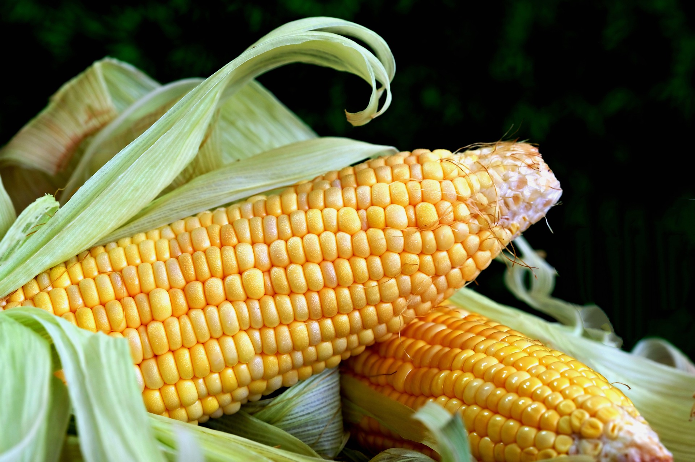
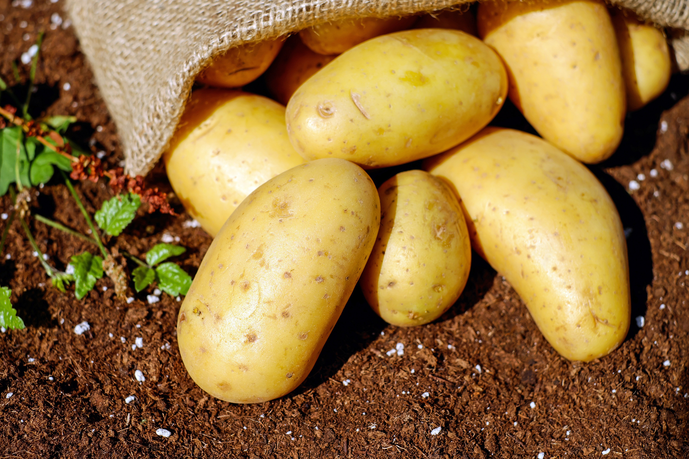
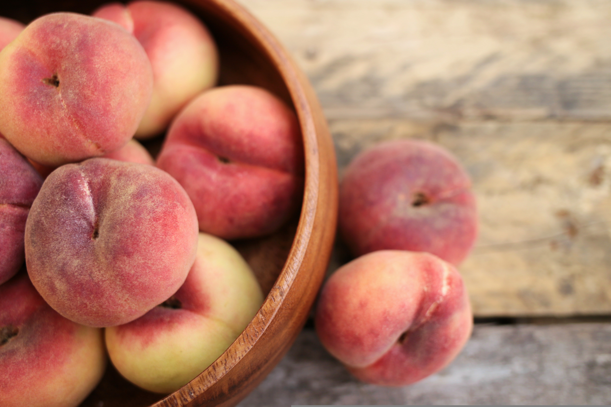
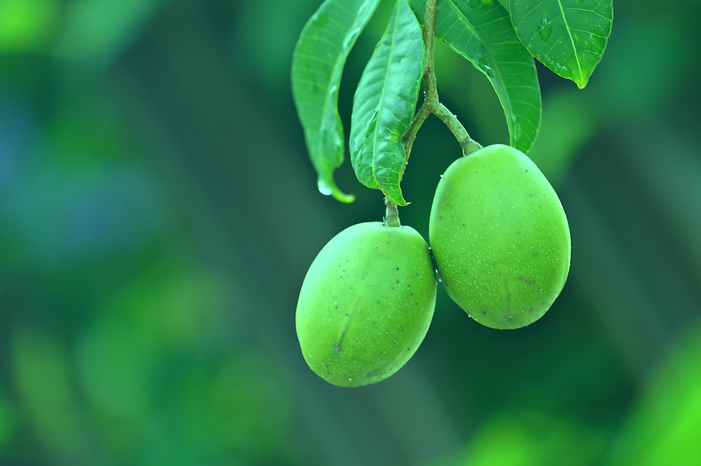
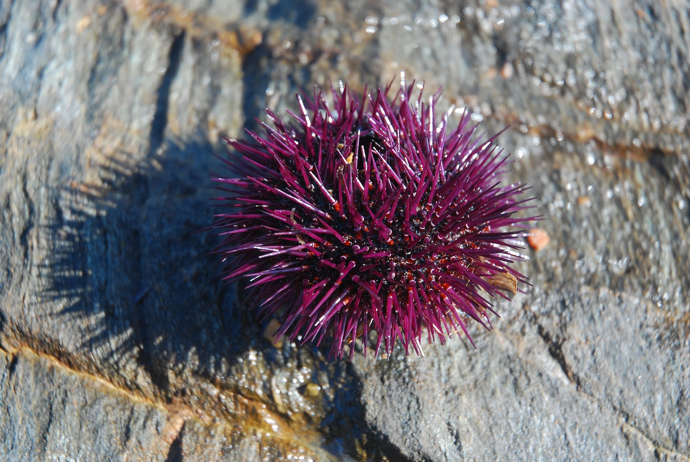
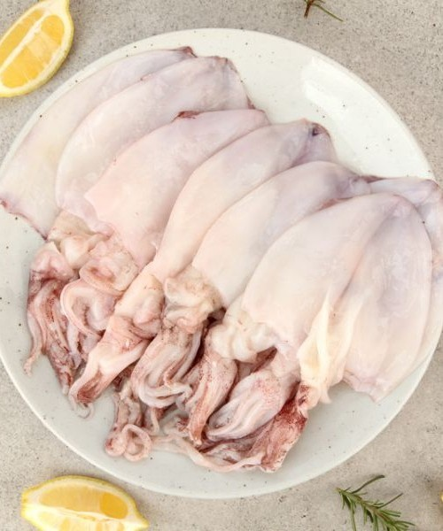

초당 옥수수🌽
6월부터 본격 출하되며 설탕을 바른 듯한 강한 단맛과
과일 같은 아삭한 식감이 특징입니다.
여름분기 맛과 영양이 최고조에 달한 이달의 추천 제철 식재료를 만나보세요.

6월부터 본격 출하되며 설탕을 바른 듯한 강한 단맛과
과일 같은 아삭한 식감이 특징입니다.

6~7월에 갓 수확한 감자는 포슬포슬한 식감과
구수한 단맛이 일품입니다.

6월 중순부터 7월 초순까지 딱 몇 주 동안만 잠깐 나오는 귀한 과일입니다.
천도의 아삭함과 백도의 진한 과즙·단맛을 동시에 느낄 수 있습니다.

5~6월사이 수확되며 새콤한 맛이 특징이며 소화불량 개선 피로해소에 좋습니다.

6~7월 동해와 남해에서 채취하는 보라성게는 쓴맛이 없고 크리미하며
녹진한 단맛이 정점에 달합니다.

6월부터 제주와 남해안에서 잡히는 한치는 오징어보다 살이 훨씬 부드럽고
씹을수록 은은한 단맛이 올라와 물회나 숙회로 먹기 좋습니다.